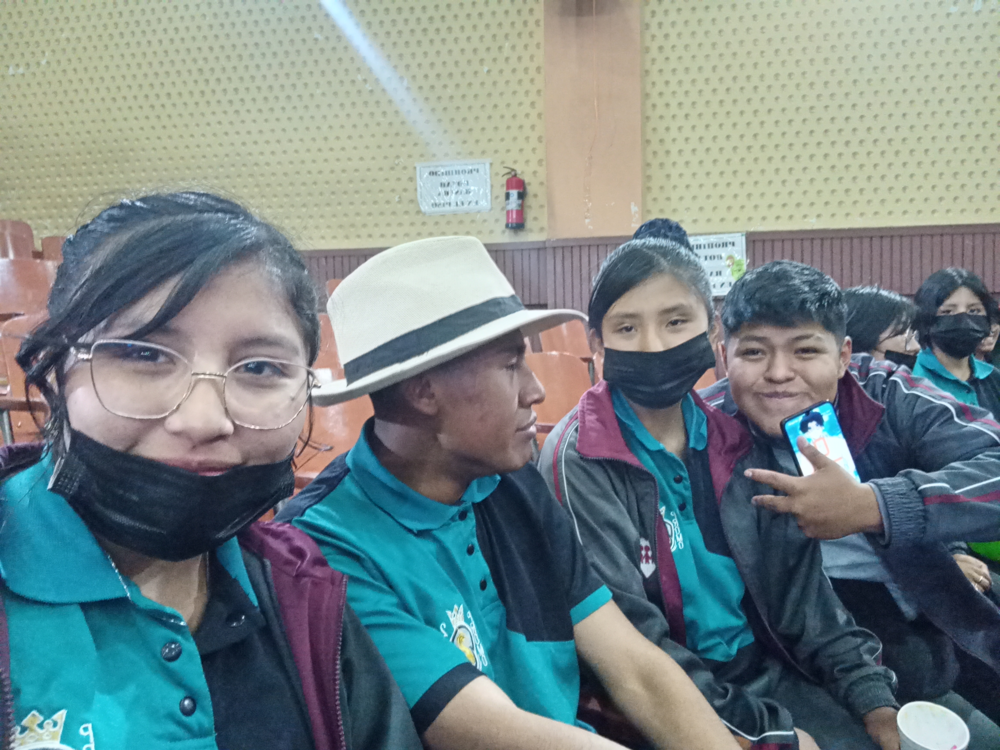
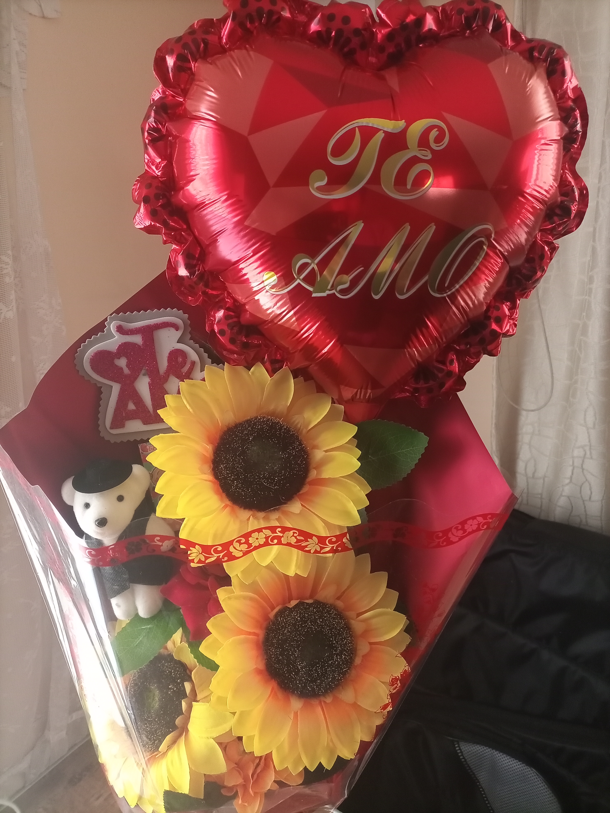

RECUERDOS
MUSICA:

Nunca olvidare la liga que... bueno se te olvido pedirme pero yo lo tome como un regalo jsjsj, bueno el
punto esq en mis momentos mas tristes o dificiles cuando estaba en la pre o en terreno siempre veia esa
liga por que sabia que no importa que solo debia aguantar por habia alguien haya afuera que me esperaba
y que me extrañaba y la extrañaba mucho, tu fuiste mi fuerza y mi determinacion para seguir dando todo
en ese lugar y resistir nunca olvidare todas las noches que me quedaba mirando ese liga o agarrandola y
pensado en ti soñando con volverte a hablar volver a verte volver a besarte y demas... por eso y mas
siempre recoerdare ese momento que aunque tu no lo sabias me acompañaste.

Esta foto me trae muchos recuerdos y sentimientos de distintos tipos, no voy a mentirte esas fechas me
sentia mal por todo el karma que estaba pagando aun asi aunque sabia que me lo merecia me sentia mal
como la pasaba esos dias, pero aun asi los recuerdo con mucha nostalgia de felicidad parece raro pero
apesar de todo lo malo seguias ahi aveces me hacias reir aveces me sentia amado pero siempre estabas
ahi, se que te preocupabas aunque un poco por mi asi que te lo agradezco, ojala volver a esos tiempos y
hacer las cosas bien para tener mejores recuerdos y aprovechar ese tiempo cuando estabas a mi lado
asi que si esta imagen me recuerda que habra dias malo pero acabaran y gracias por haber estado ahi...
Jsjsjsj esta foto siempre me produce amor y ternura siempre me gusto tu carita la forma que tenia tu
pelo caido o recogido en si todo de tu carita me gustaba y mucho enserio aun recuerdo esos dias eras muy
mandona con migo pero por alguna razon eso me encantaba aunque no lo desia ni lo hacia notar enserio me
gustaba mucho que me mandaras me llamaras la atencion cuando hacia algo malo por que para mi era la
forma mas pura de saber que te importaba que me querias jsjsj es sierto aveces me hacias pasar momentos
vergonzosos con mis amigos y me enojaba o momentos parecidos pero enserio creeme que me llego a gustar
muchoo esa forma en la que me mandabas jssj y siempre me gustara esa tu actitud nunca cambies, por eso
recordare esto con nostalgia eres y seras la primera persona que logro dominarme a tal punto de aseptar
lo que sea por ti jsjsj te quiero mucho.


Hay ese dia tan lindo y raro a la ves, kskskk no me sentia comodo por que esos dias eran tristes para
mi aun asi siempre encontraste la manera de animarme con tu caracter tan imponente ,vamos a desir, jsjsj
con migo siempre recordare como nos reimos y al mismo tiempo parecia un momento romantico jsjsj una toda
una explosion de emociones para mi y lo mejor estaba a tu lado por eso siempre recordare esta como una
de las ultimas salidas donde rei, rei de verdad gracias a ti y tu hermoso humor carita y caracter jssj.
Hay esta foto jsjsj realmente se que esos dias ya no eran los mejores y ya pareciamos una pareja de
viejos rabo verde jsjsj o almenos yo era el ogro pero ese dia enserio fue bonito aunque no pasamos casi
mucho tiempo juntos y me meti en problemas por llegar tarde lo recuerdo como la primera fiesta y ultima
que hiba con mi pareja, con esa pareja que todos sabian que hibamos a terminar casados pues yo llegue
ese dia con ese pensameinto pensaba somos como una pareja de casados y estamos yendo a una fiesta asi lo
veia y fue la mejor sensacion del mundo enserio nunca me olvidare de eso. tu eres y seras esa pareja que
yo vi como mi futura esposa y la madre de mis enanos jsjsj. Me sienta un poco mal saber que ese dia
nunca llegara y esa familia nunca existira aun asi fue el mas grande sueño que tube y no me arrepiento
de haberlo soñado ahora vive en nuestros recuerdos y esa historia en mi corazon talves un mi mente todo
eso si paso y es suficiente vida para mi...


Okey aqui debo empezar con un te amo, o bueno mas bien amo a esa Milenka que me dio ese detalle siempre
amare a esa persona por que me enseño a amar bonito a dar todo por esa persona por que hacias tu siempre
diste todo de ti talves no era lo mejor del mundo debemos aceptarlo pero para mi eres la mejor peresona
que conocere un mi corta vida asi que enserio muchas gracias por ese dia nose si era en febrero o en que
fecha, solo se que fue el mejor dia para mi ya que me sentia amado amado por la persona mas linda para
ese chico asi que nunca olvidare ese detalle y lo llevare con migo en mi corazon hasta mi tumba gracias
enserio por ese detalle, TU CORAZON.
Y como veras al momento de hacerte esta carta realmente me conmovio volver a ver y volver a vivir cada
momento, espero hacer que sientas tambien eso cuando lo veas tu tambien cuidate mucho te quiero mucho mi
persona especial mi persona favorita la dueña de mi corazon :)